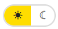
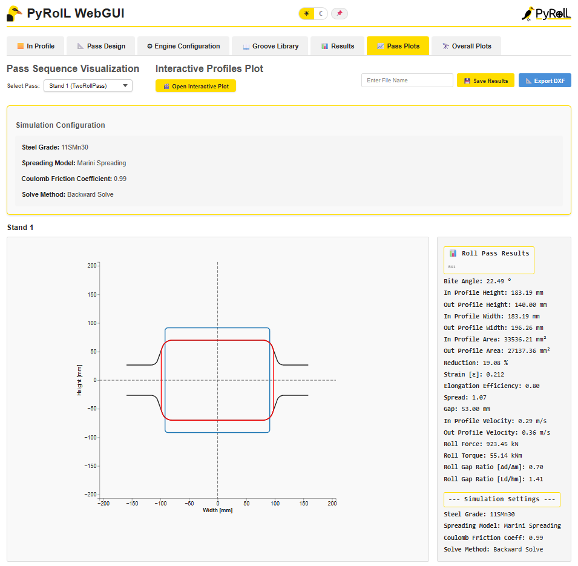
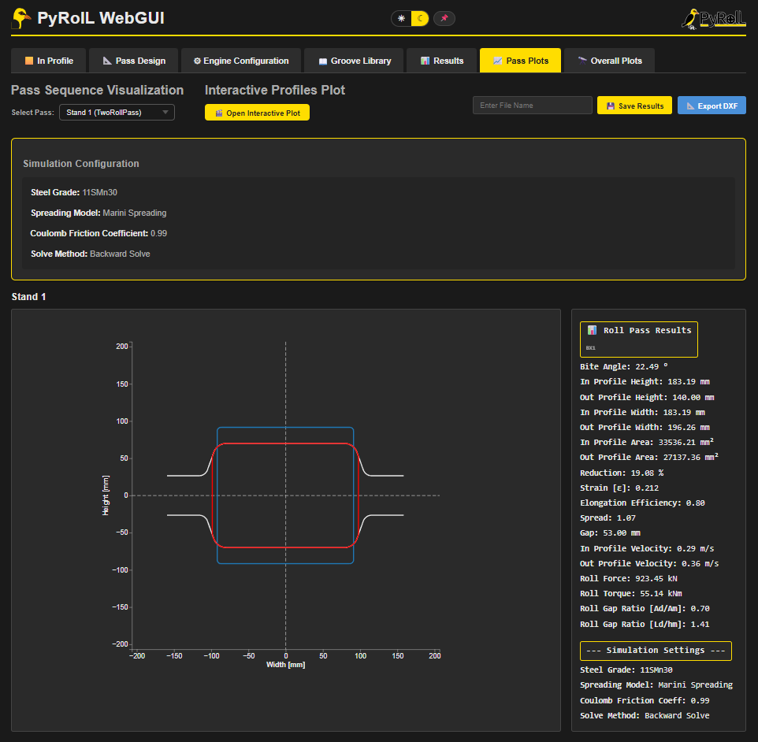

PyRoll GUI | Date: June 2026
PyRoll WebGUI runs as a native Electron application, which means it has a standard operating system menu bar at the top of the window — separate from the tab-based web interface inside the window. The menu bar provides access to file operations, view controls, window management, and the built-in help documentation.
All menu items are also accessible via keyboard shortcuts. On Windows, you can activate the menu bar by pressing Alt, then navigate with the arrow keys.
The application supports two colour themes — Bright Mode (default, white background) and Dark Mode (dark background with yellow accents). The theme can be toggled in two ways:



The theme setting is applied immediately and persists for the current session. All plots, tables, and UI elements switch colours together — including the roll pass visualization plots and the 3D cross-section evolution chart.
The File menu contains all project file operations.
| Item | Shortcut | Description |
|---|---|---|
| New | Ctrl+N | Resets the entire project to a blank state — clears the current pass design, simulation results, and all configuration. Prompts for confirmation if unsaved changes are present. |
| Open | Ctrl+O | Opens a system file dialog to load a previously saved PyRoll project file (.json). All pass design, engine configuration, simulation settings, and results are restored. |
| Save | Ctrl+S | Saves the current project (pass design, engine configuration, In-Profile, settings, and simulation results) to a .json file. Opens a save dialog on first save. |
| Exit | Ctrl+Q | Closes the application. The Python backend process is shut down automatically. |
The Edit menu provides standard text editing operations for input fields within the application.
| Item | Shortcut | Description |
|---|---|---|
| Undo | Ctrl+Z | Undoes the last text edit in the focused input field. |
| Redo | Ctrl+Y | Re-applies the last undone text edit. |
| Cut | Ctrl+X | Cuts the selected text from the focused input field to the clipboard. |
| Copy | Ctrl+C | Copies the selected text to the clipboard. |
| Paste | Ctrl+V | Pastes text from the clipboard into the focused input field. |
The View menu controls the display scale of the application window and provides access to the theme toggle and developer tools.
| Item | Shortcut | Description |
|---|---|---|
| Zoom In | Ctrl+= | Increases the UI scale by 10 % per step. Maximum zoom: 300 %. Also works with Ctrl++ on most keyboard layouts. |
| Zoom Out | Ctrl+− | Decreases the UI scale by 10 % per step. Minimum zoom: 25 %. |
| Reset Zoom | Ctrl+0 | Resets the UI scale to 100 % (default). |
| Fullscreen | F11 | Toggles fullscreen mode. The menu bar is hidden in fullscreen; press F11 again or Esc to exit. |
| Developer Tools | F12 | Opens the Chromium DevTools panel for debugging the web UI. Intended for developers. |
| Dark Mode | Ctrl+Shift+D | Toggles between Bright and Dark colour theme. The menu item shows a checkmark (✓) when Dark Mode is active. |
The Window menu provides basic window management actions.
| Item | Shortcut | Description |
|---|---|---|
| Minimize | Ctrl+M | Minimizes the main window to the taskbar. The backend continues running in the background. |
| Close | Ctrl+W | Closes the main window and shuts down the application including the Python backend. |
The Help menu provides access to application information, the online PyRoll documentation, all built-in guide documents, and method reference documents. Guide and method documents open in a separate window.
| Item | Description |
|---|---|
| Description | Shows a brief text description of the PyRoll WebGUI application in a dialog box. |
| About |
Displays detailed version information in a dialog:
|
| Authors | Shows the author information for the application. |
| PyRoll Documentation ↗ | Opens the official PyRoll documentation at pyroll.readthedocs.io in the system default web browser. |
The Guides submenu opens the built-in HTML guide documents, each in its own separate window. Guides cover the main workflow tabs of the application.
| Guide | Tab | Contents |
|---|---|---|
| In Profile Guide | In Profile | Setting up the initial billet geometry, selecting steel grade, temperature, and loading profiles from the library or XML. |
| Pass Design Guide | Pass Design | Creating and editing roll passes, configuring groove geometry, pass sequences, and using the pass design library. |
| Engine Configuration Guide | Engine Configuration | Defining drive motors, assigning stands to engines, reviewing utilisation diagrams, and using the engine library. |
| Groove Library Guide | Groove Library | Browsing and filtering the groove geometry library, visualising groove profiles, and loading grooves into the pass design. |
| Results Guide | Results | Reading the roll pass results table, engine evaluation, result plots, and exporting results. |
| Pass Plots Guide | Pass Plots | Per-pass roll pass visualization, temperature profile plot, interactive profiles animation, DXF export. |
| Overall Plots Guide | Overall Plots | Cross-section evolution 3D chart, all-pass roll pass plots, pass profile overview, and result export. |
The Methods submenu opens technical reference documents for the simulation methods and special models implemented in PyRoll WebGUI.
| Document | Contents |
|---|---|
| Interstand Tensions | Explains the interstand tension model used when tension between consecutive stands is defined. Covers the theoretical background, input parameters, and result interpretation. |
| Asymmetric Roll Pass | Documents the asymmetric rolling model — passes where the upper and lower rolls have different speeds or radii. Covers sub-pass results, pillar plots, and limitations. |
| Flat Rolling Edge Deformation | Describes the Siebel criterion for edge deformation in flat rolling passes. Covers the dog-bone profile prediction and the conditions under which it applies. |
A complete overview of all keyboard shortcuts available in PyRoll WebGUI:
| Shortcut | Action |
|---|---|
| Ctrl+N | New project |
| Ctrl+O | Open project file |
| Ctrl+S | Save project |
| Ctrl+Q | Exit application |
| Ctrl+Z | Undo (text input) |
| Ctrl+Y | Redo (text input) |
| Ctrl+X | Cut |
| Ctrl+C | Copy |
| Ctrl+V | Paste |
| Ctrl+= / Ctrl++ | Zoom in |
| Ctrl+− | Zoom out |
| Ctrl+0 | Reset zoom to 100 % |
| Ctrl+Shift+D | Toggle Dark / Bright Mode |
| Ctrl+M | Minimize window |
| Ctrl+W | Close window |
| F11 | Toggle fullscreen |
| F12 | Toggle Developer Tools |
Michael Molter | PyRoll GUI – Application Menu Guide